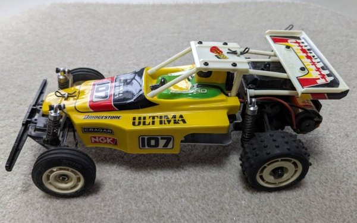

京商 デミカシリーズ

引用元画像：ヤフオク出品画像
📋 基本情報
| メーカー | 京商（Kyosho） |
|---|---|
| 機種名 | デミカシリーズ（Demika Series） |
| シャーシ略称 | デミカシリーズ |
| 型番 | 詳細不明 |
| 発売時期 | 1987年 |
| 価格 | 詳細不明 |
| 生産状況 | 生産終了 |
| カテゴリー | ラジコンカー（1/20スケール 電動RCカー） |
| サブカテゴリー | マイクロレーシングバギー（EPバギー） |
| シリーズ | デミカシリーズ（ミニッツバギーの原点） |
📏 シャーシスペック
| スケール | 1/20スケール |
|---|---|
| 全長 | 詳細不明 |
| 全幅 | 詳細不明 |
| 全高 | 詳細不明 |
| ホイールベース | 詳細不明 |
| トレッド | 詳細不明 |
| タイヤ幅/径 | 詳細不明 |
| フレーム | 詳細不明 |
| 全備重量 | 詳細不明 |
⚙️ 駆動系
| 駆動方式 | リアドライブ2WD（推定） |
|---|---|
| デフギヤ | 詳細不明 |
| ギヤ比 | 詳細不明 |
| ギヤピッチ | 詳細不明 |
| トランスミッション | 詳細不明 |
| モーター | EPマイクロモーター（詳細不明） |
🔧 サスペンション
| 形式 | 詳細不明 |
|---|---|
| サスアーム | 詳細不明 |
| ダンパー | 詳細不明 |
| ステアリング | 詳細不明 |
💡 特徴
マイクロサイズでのレーシングバギーの実現
- 1987年にマイクロスケール（1/20スケール）でレーシングバギーの実現を目指したマシン
- 後のミニッツバギーにつながる、京商マイクロバギーシリーズの原点
- 小さいながらも本格的なレーシングバギーのディテールを再現
1980年代後期のマイクロRC技術の集大成
- 当時としては画期的なマイクロサイズのバギーシャーシ
- 電動パワーソースによる手軽な走行を実現
- コンパクトながら本格的なサスペンション機構を搭載（推定）
ミニッツバギーへの道筋
- 2000年代に登場するミニッツバギーの技術的な礎
- マイクロスケールバギーの可能性を切り開いた先駆的モデル
- 京商のマイクロRC技術の歴史における重要なマイルストーン
バリエーション展開
- デミカシリーズとして複数のボディバリエーションが存在（推定）
- ターボオプティマ2WDなどのボディデザインが確認されている
- 当時の人気バギーをマイクロスケールで再現したコンセプト
🔧 ぽすとそに工房での修理実績
修理難易度
★★★★★（非常に困難）
絶版で、パーツがほぼ見当たらず、情報もほぼないため、修理は極めて困難です。
よくある故障・注意点
- 絶版のため、交換パーツの入手が困難
- マイクロサイズの部品のため、紛失しやすい
- 当時のバッテリー規格が現代と異なる可能性
- モーターやギヤなどの駆動系パーツの劣化
- プラスチックパーツの経年劣化・破損
修理のポイント
- パーツ入手は極めて困難のため、他の京商マイクロモデルからの流用を検討
- 破損パーツは3Dプリンターによる自作も視野に
- モーターは現代の小型モーターへの換装を検討
- バッテリーは現代のLiPoバッテリーへの変更が必要な場合も
- オリジナルパーツの保存が最優先
その他の特徴
- マイクロRCの歴史的価値が高いコレクターズアイテム
- ミニッツバギーの原点として技術的に興味深いモデル
- 1987年当時のマイクロRC技術の到達点を示す貴重な機種
- 情報が少ないため、個体ごとに仕様が異なる可能性
- 現存する個体自体が非常に少ない希少モデル